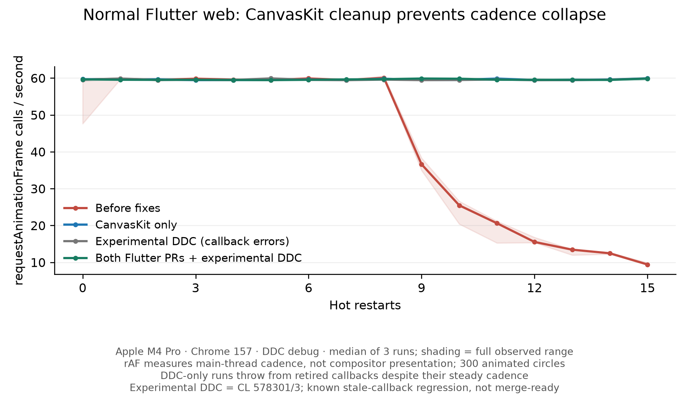
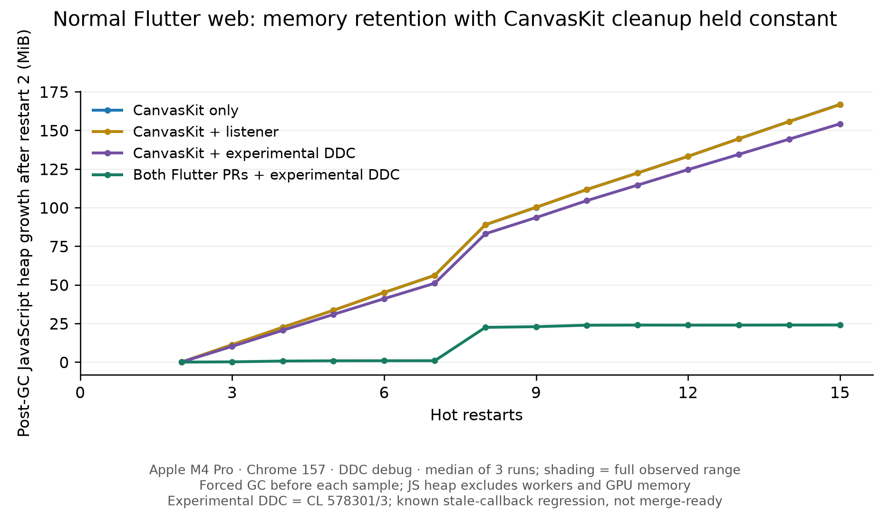
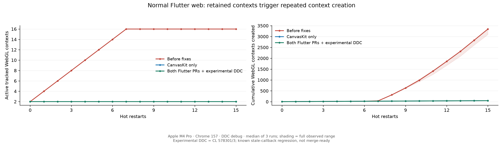
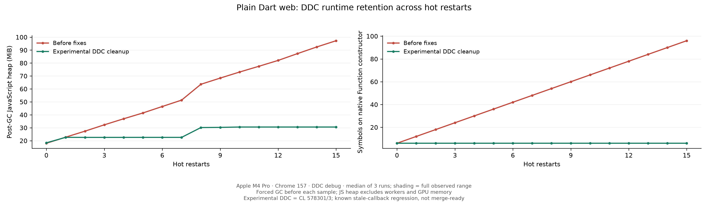

Desktop-Messung vom 19.11.2026 · Apple M4 Pro · Chrome 157 · drei Durchläufe pro Variante. Die rAF-Kurve zeigt die Taktung des Hauptthreads. Heap-Werte wurden nach erzwungener GC gemessen.
DDC-Kurven zeigen einen experimentellen Patch mit bekannter Callback-Regression, keinen merge-fertigen Fix. Der getestete Patch und die Rohdaten bleiben archiviert.



